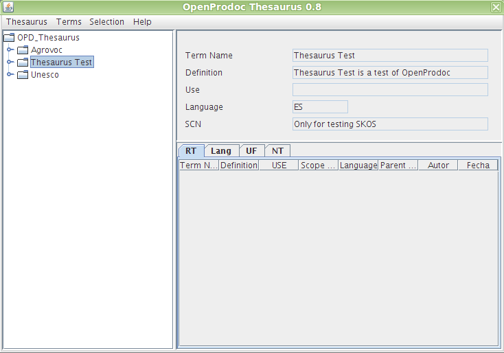

The main window OpenProdoc thesaurus has two areas:
The tree allows to browse the different information structures in the repository. Starting in the main branch (OPD_Thesaurus) it's possible to open the different thesaurus of the repository, showed as branches under the main branch. The next levels under the thesaurus are the terms of each thesaurus.
Each term will show the narrow terms (NT) as elements under its branch. Microthesaurus are not used because it's possible to browse all the elements as a tree and also it's possible to do a search restricted to all the terms under the current term.
It should be noted that OpenProdoc do not support polihierarchy, so each term only references one broad term (BT). The tree representation is therefore completely accurate
The terms tree shows a structure with icons next to the term name that has the following meaning:
For Swing client, the appearance is slightly different, but the behavior is basically the same.
When browsing terms, the right side in turn contains two zones:
Whenever you select a thesaurus or term by clicking on its name in the tree, it becomes the "current thesaurus" or "current Term". All operations are performed on the current element, therefore, choosing Terms->Modify, will modify the current Term, and choose Thesaurus->Delete, will delete the current thesarus.
Upper part has some drop down menus to perform operations on the current term or the current thesaurus as well as another set of options. When choosing a menu option, the Web client displays a form to perform the operation on the right side of the screen. Swing clients will display a popup window to perform the operation.

In the Swing client, this table can be sorted by selecting the header of each column. You can also change the size of each column by dragging the separator line headers